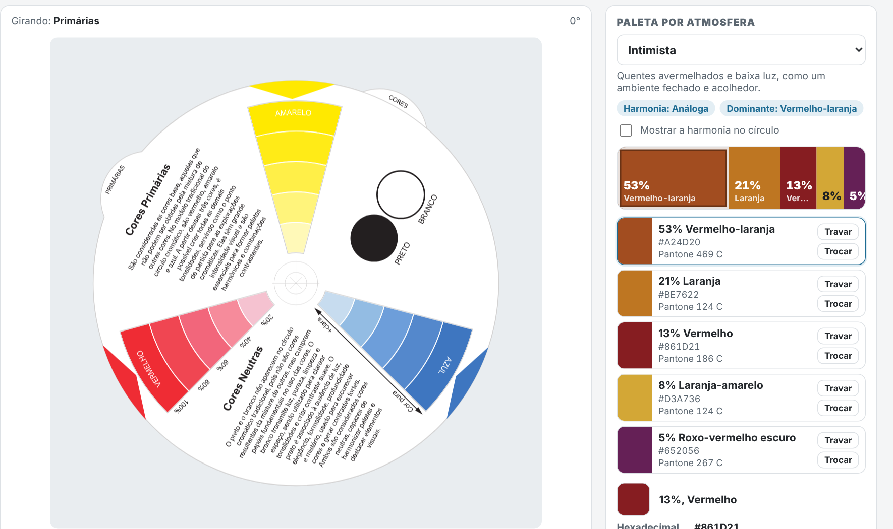
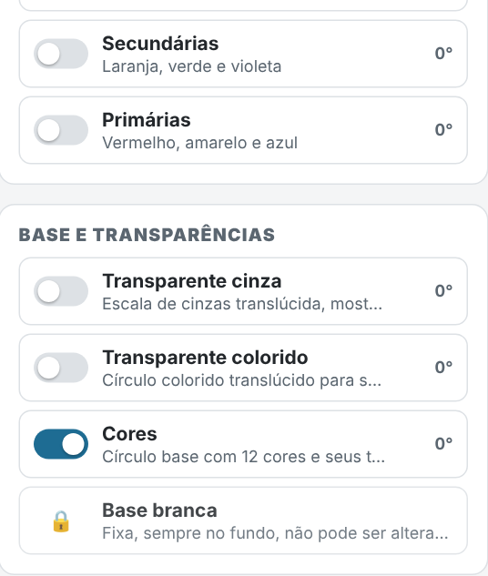
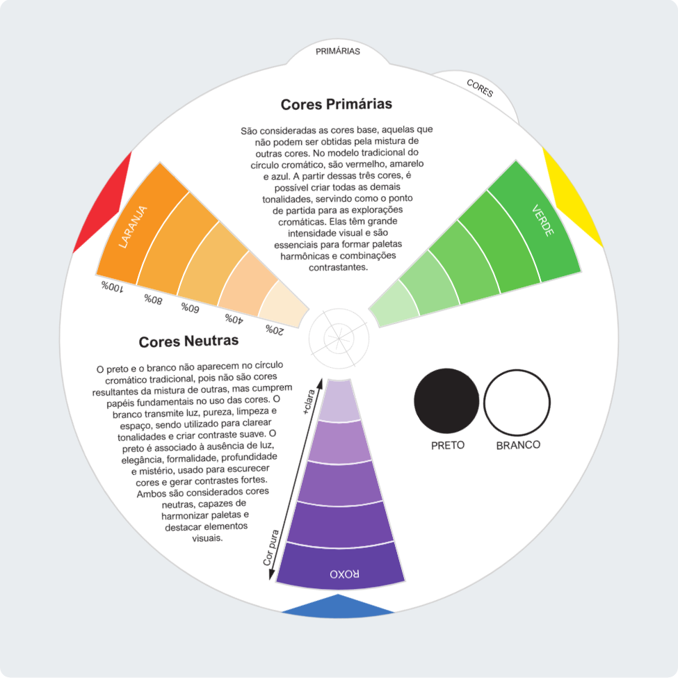
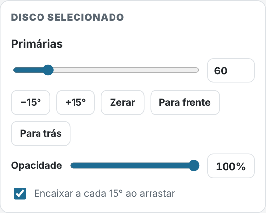
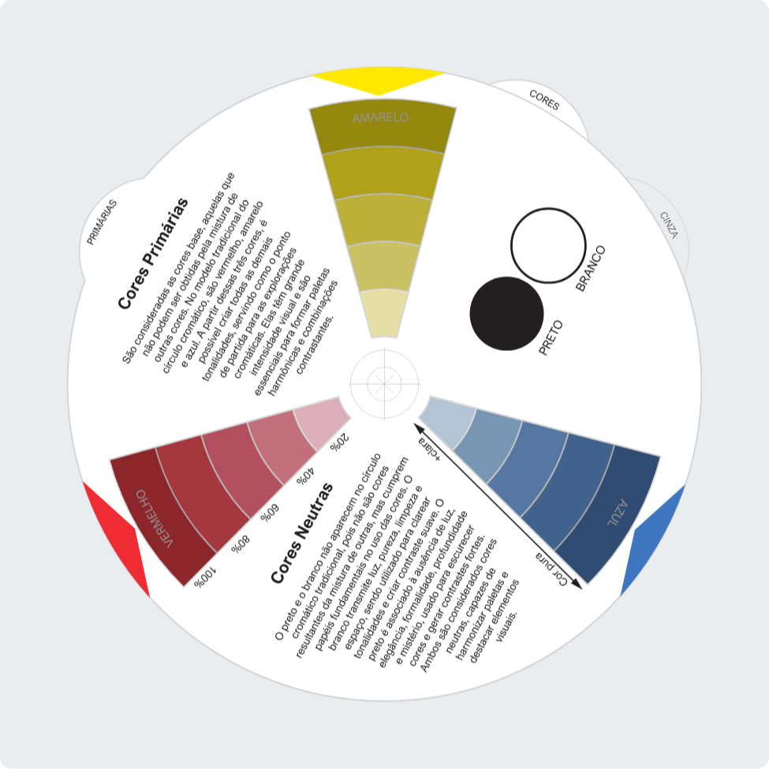
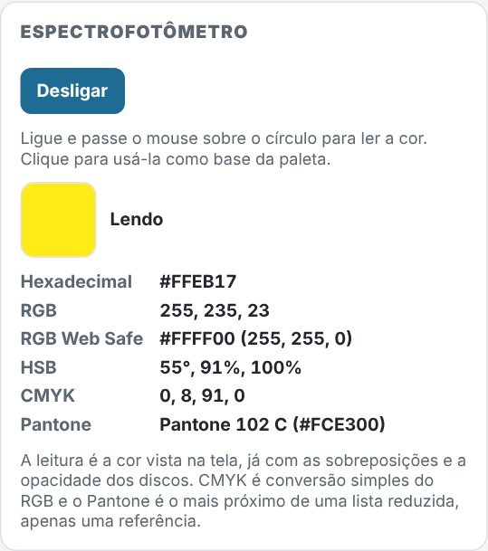
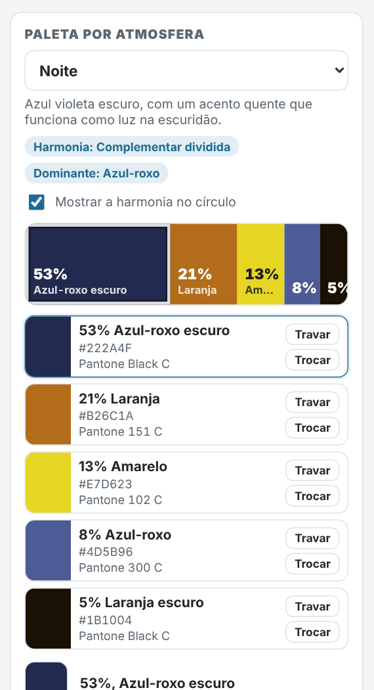
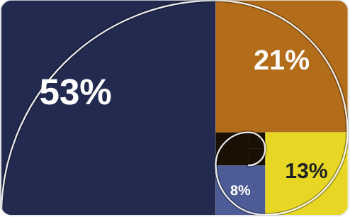
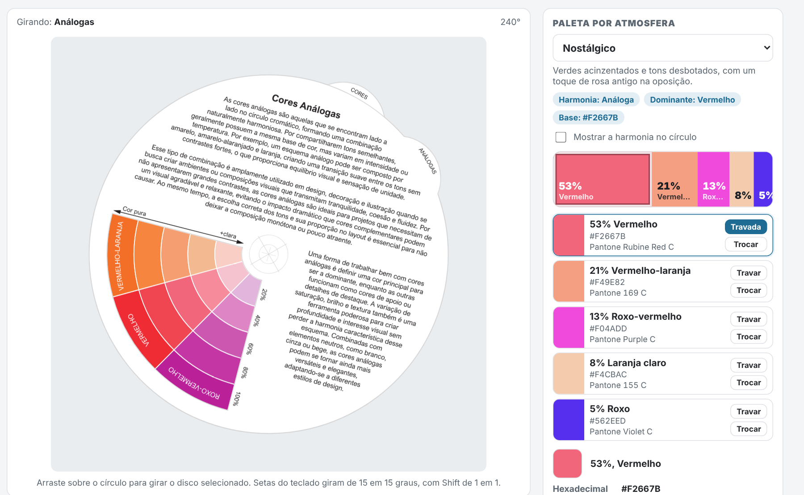

Arraste sobre o círculo para girar o disco selecionado. Setas do teclado giram de 15 em 15 graus, com Shift de 1 em 1, em qualquer ponto da tela fora de campos de texto.
Linhas: cor cheia, tons claros do círculo e dois tons escuros. A cor escolhida fica travada.
"Sugerir outra" troca a dominante e a harmonia dentro da atmosfera, mantendo as cores travadas.
A leitura é a cor vista na tela, já com as sobreposições e a opacidade dos discos. CMYK é conversão simples do RGB e o Pantone é o mais próximo de uma lista reduzida, apenas uma referência.
Esta ferramenta é uma bancada de estudo de cor. À esquerda ficam os discos empilhados sobre uma base branca. À direita fica o painel de controles, que rola sozinho e não tira o círculo da tela. Siga os passos abaixo na ordem ou vá direto ao que precisa.
O círculo mostra todos os discos ligados, um sobre o outro. No painel estão, de cima para baixo: a paleta por atmosfera, os controles do disco selecionado, o espectrofotômetro, os atalhos e as listas de discos.
As imagens deste guia foram feitas na própria ferramenta, então o que você vê aqui é o que vai ver em uso.

Cada disco tem uma chave. Ligue para ele aparecer no círculo e desligue para retirá-lo, como se tirasse uma folha da pilha.
Clique no nome do disco para selecioná-lo. O disco selecionado é o que gira e o que recebe os ajustes do painel.
As listas mostram o disco da frente no topo. No fim da lista de base está a "Base branca", com um cadeado: ela fica sempre no fundo e não pode ser alterada.

Com o disco selecionado, arraste sobre o círculo, use o controle deslizante, digite o ângulo ou use as setas do teclado: 15° por vez, ou 1° com Shift.
"Encaixar a cada 15°" faz o arraste parar nas posições das 12 cores. Desmarque para girar livremente.
As janelas recortadas do disco deixam ver as cores da base. Gire até a harmonia mostrar o que você quer estudar.

"Para frente" e "Para trás" mudam a posição do disco na pilha, e a lista acompanha: "Para frente" sobe a linha, "Para trás" desce.
A barra de Opacidade vai de 0 a 100% para qualquer disco. Os dois discos transparentes começam em 60%.
O Transparente cinza, ligado sobre as cores, mostra o valor (o claro e o escuro) de cada uma. É um bom exercício de Luz e sombra: ordene as cores da mais clara à mais escura.


Clique em "Ligar" no bloco Espectrofotômetro e passe o mouse sobre o círculo. Ele mostra a cor que você está vendo naquele ponto, já com as sobreposições e a opacidade dos discos: hexadecimal, RGB, RGB Web Safe, HSB, CMYK e o Pantone mais próximo.
Atenção: o CMYK é uma conversão simples do RGB e o Pantone é aproximado, uma referência para conversar com a gráfica, não um valor de prova. Com o espectrofotômetro ligado, o arraste não gira os discos.

No bloco "Paleta por atmosfera", escolha uma atmosfera, como Intimista, Sombrio, Alegre ou Noite. O app define a cor dominante, a harmonia e o perfil de saturação e luz, e distribui as cinco cores pela proporção de Fibonacci: 53%, 21%, 13%, 8% e 5%.
Passe o mouse sobre uma cor para ver seus dados. "Trocar" abre os 12 tons do círculo, com tons claros e escuros. "Travar" mantém a cor quando você muda a atmosfera ou pede outra sugestão.
"Saturação" e "Luminosidade" ajustam toda a paleta de uma vez. "Sugerir outra" troca a dominante e a harmonia dentro da atmosfera, e "Restaurar atmosfera" volta ao início.
Com "Mostrar a harmonia no círculo" marcado, o disco da harmonia liga sozinho e gira até a janela mostrar a cor dominante.


Ligue o espectrofotômetro e clique numa cor do círculo. Ela vira a cor dominante da paleta, exatamente como foi clicada, e fica travada. A harmonia vem do disco ligado que estiver mais à frente, e as outras quatro cores herdam a saturação e a luz da cor clicada.
Para trocar o perfil, use "Aplicar perfil da atmosfera": as cores livres passam a seguir a atmosfera, e a cor clicada continua travada.
No exemplo ao lado, a atmosfera é Nostálgico, o disco é Análogas e o clique foi no #F2667B.
